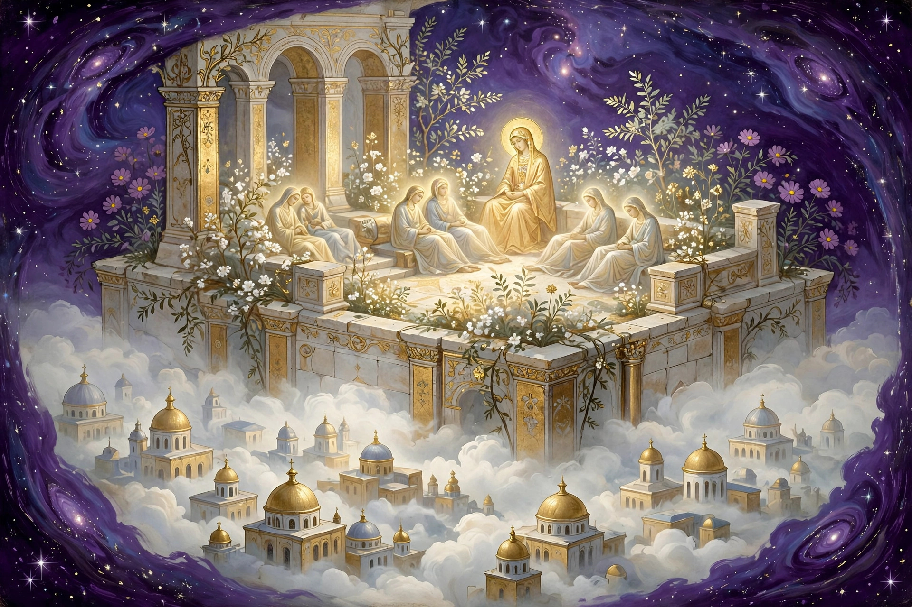

Can this path bring spiritual psychosis? An honest answer, and the guardrails that keep the practice on the safe side of the line.

This map asks you to question what is real: the world is a trap, the god most people pray to is not the true God, you are a spark from somewhere else. That is a heavy reframe. Any spiritual practice that reframes reality that hard can destabilize a person — especially if it comes with lost sleep, fasting, isolation, or doing it obsessively for hours alone.
The old Gnostics themselves were having intense visionary experiences. The line between a profound spiritual experience and a break is real, and it is genuinely debated under the name "spiritual emergency." The usual way to tell the difference is functioning: can you still sleep, eat, care for your children, and tell what is real in the day.
The morning practice is structured and bounded. Names and the Phrase with the children, then the day goes on. It is shared, not solitary. It has a routine and an ending.
That is the opposite of the pattern that gets people in trouble, which is usually alone, late at night, no sleep, going deeper and deeper without coming back up.
Stop and get grounded, and talk to someone, if any of these show up:
· You start hearing the gatekeepers or the archons as voices giving you orders.
· You feel the world is literally attacking you or watching you.
· You cannot sleep for days.
· You cannot tell whether something happened or you imagined it.
· The map starts replacing the day instead of sitting inside it.
If any of that ever happens, that is a doctor conversation. Not a book conversation, and not a prayer conversation. Get help from a person who can see you in the room.
Keep your sleep. Keep the practice in the morning, not at 3 AM. Keep it with the children, not alone in the dark. And keep living the day after you pray.
The Phrase itself is a grounding tool: "I know myself, and I know where I have come from." If you can still say that and mean it in the kitchen making breakfast, the practice is doing its job.